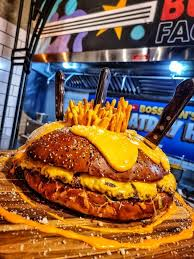

Burger Factory Bucharest Burger
Home

Burger Description
The Burger Factory Bucharest burger is a mouthwatering creation that blends premium ingredients with bold flavors.
Served on a freshly baked brioche bun, it features a juicy beef patty, melted cheddar cheese, crisp lettuce,
ripe tomato slices, tangy pickles, and a special house sauce.
This burger has become a local favorite for its perfect balance of savory, creamy, and fresh elements.
Ingredients
- 200g fresh ground beef (80% lean, 20% fat)
- 1 brioche burger bun
- 2 slices cheddar cheese
- 2 leaves crisp lettuce
- 2 slices ripe tomato
- 3–4 pickle slices
- 1 tablespoon house burger sauce (mayonnaise + mustard + ketchup blend)
- Salt and pepper, to taste
- 1 tablespoon butter
Instructions
- Preheat a grill or skillet to medium-high heat.
- Season the ground beef with salt and pepper, form it into a patty, and grill for 3–4 minutes per side.
- In the last minute of cooking, place cheddar slices on top of the patty to melt.
- Lightly butter and toast the brioche bun halves on the grill until golden.
- Spread house burger sauce on the bottom bun.
- Layer lettuce, tomato slices, pickles, and the hot cheesy beef patty.
- Top with the other half of the bun and serve immediately.